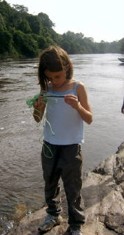
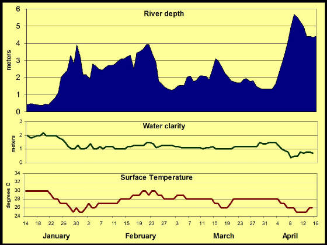
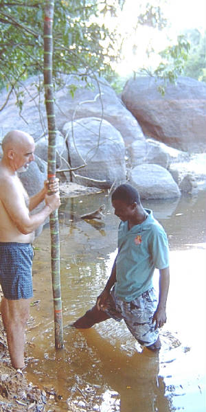
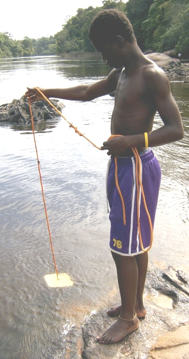

|
| Our friend Emily helping us |
RIVER MEASUREMENTS
The river level changes every day. It has come up 18 feet since we arrived at the end of thedry season.
On the graph below, you can see the results of the short rainy season in January-February and the beginning of the long rainy
season in April. Rain falls far to the south of us at the headwaters of the river, causing the river to rise
sometimes one meter in a day.
| Coppename River at Foengoe Island, 2005 |

|
Our measurements of the river show a relationship between water level and its clarity and temperature.
We measure the water level everyday with a permanent 7-meter stick that we made and placed in the sandy river bottom.
It is a tall, slender tree trunk; we removed the bark every ten centimeters (cm) and painted a green line. Every
meter (m) we made a wider orange mark. We record the water level every morning.

|
| Chuck and Michael setting the pole |
Water clarity (or its opposite turbidity) is measured with a Secchi disk.
We made ours from wood and painted it white. Very recently we got a commercial plastic one from the US Geological Survey.
They both work the same. We lower the disk into the water until we can't see it. We try raising and lowering so
that we can get the depth where it just disappears. We record that in tenths of a meter. The rope is marked every
10cm. When the water is low, it is also flowing less quickly. Their is less runoff from the land and we can see
deeper into the water. It is never clear as there are always a lot of tannins from land plants. They make the
water appear brown.
We measure temperature with a thermometer on a line. We try to measure
surface and 2m temperatures but sometimes the current flows too strongly. The two measurements are almost always the
same except when the water was very low at the end of the dry season. Then the surface water was 2 degrees Centigrade
(C) warmer than the deeper water. When the days are sunny and the shallow water flows slowly, it warms up. It
is like getting in a hot tub at the end of the day when the water is warmer than the air. As you can see above when
the water level rises the tempaerature falls--but not much this is the tropics.

|
| Pascal measuring turbidity with a Secchi disk |
Enter supporting content here
In the middle of the Central Suriname Nature Reserve, Amazonia, South America
|